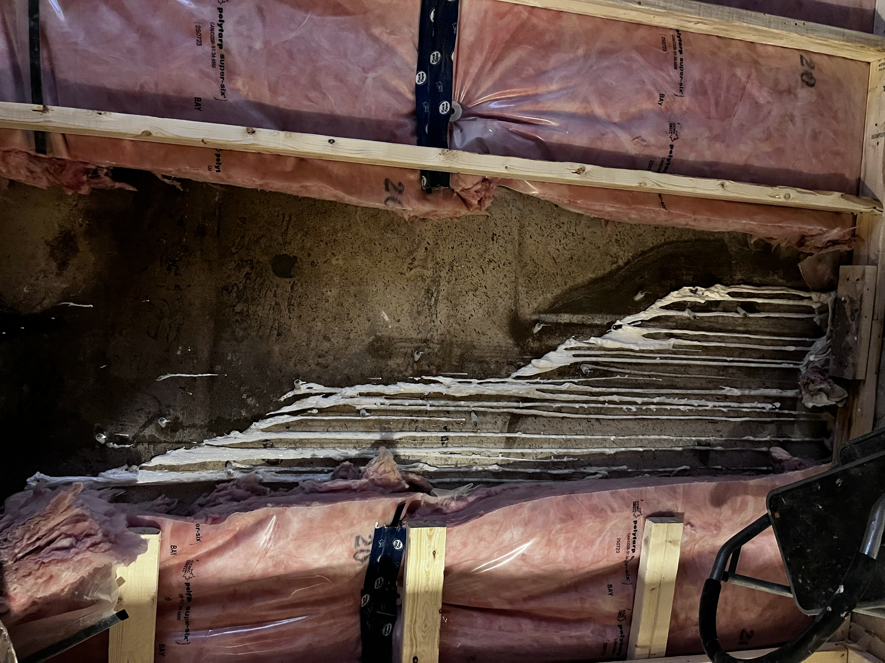
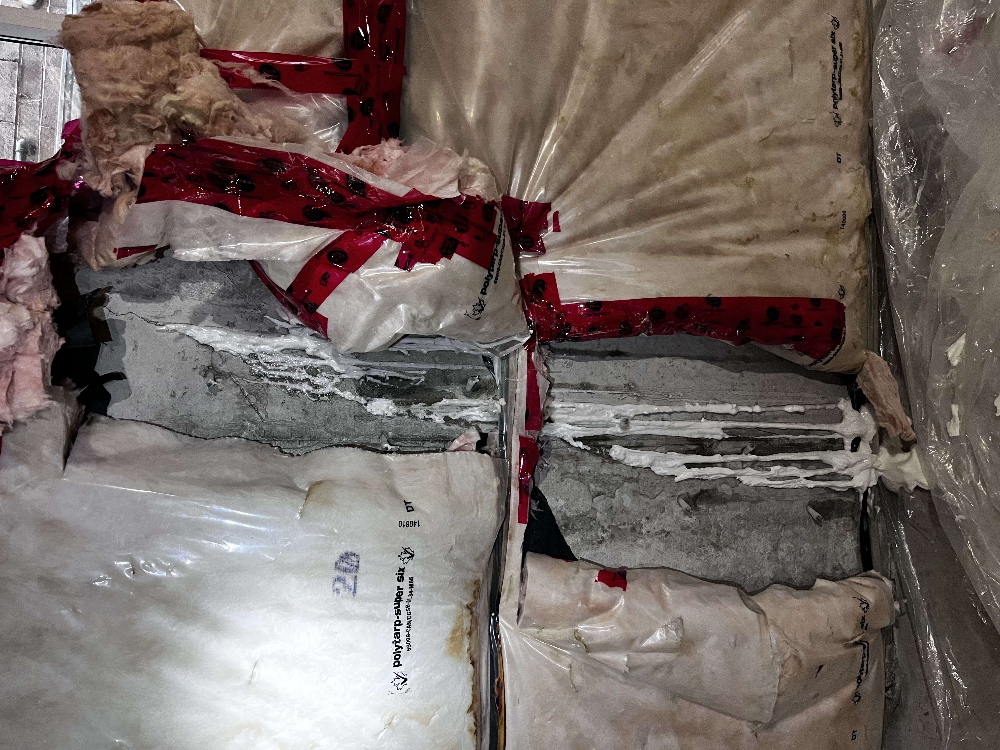
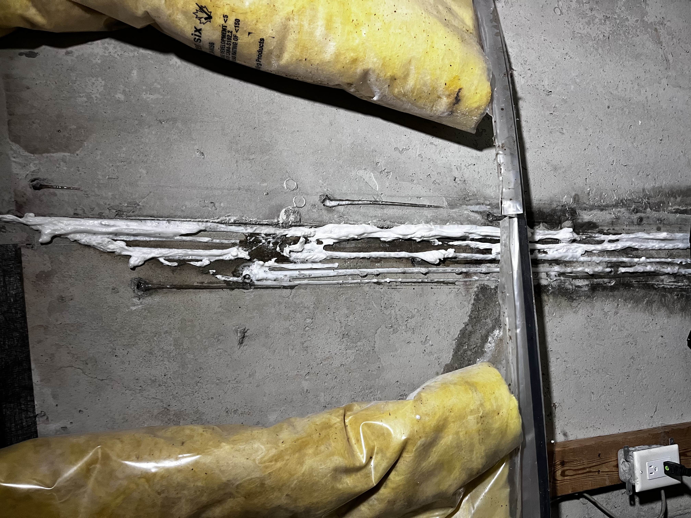
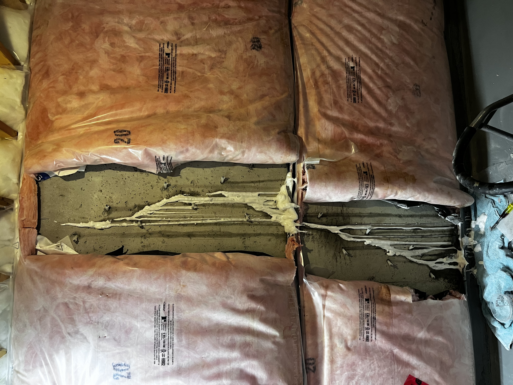
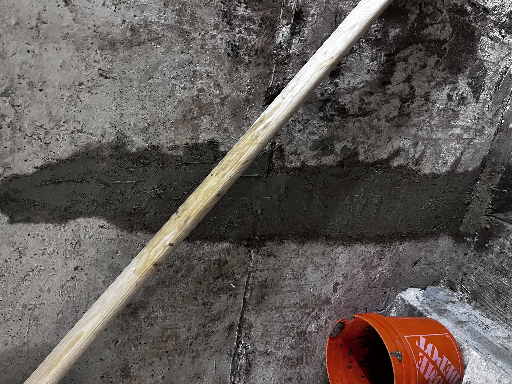

Concrete Crack Repair
Professional crack filling & repair services
Professional crack filling & repair services
At Concrete Crack Repair, we specialize in restoring strength, safety, and appearance to your concrete surfaces. Whether it’s your driveway, foundation, or walkway, our team ensures long-lasting results with professional-grade materials. We proudly serve the GTA and select surrounding cities.





Small cracks can quickly turn into major problems. Water seepage, freeze-thaw cycles, and soil movement can cause severe structural damage if ignored.
Timely crack repair prevents costly issues, improves safety, and extends the life of your driveway, foundation, and walkways. Serving the GTA, our team provides long-lasting solutions tailored to Ontario’s climate.
(289) 981-3178
info@concretecracks.ca
Serving Toronto, Mississauga, Brampton, Oakville, Saint Catharines, Burlington, Vaughan, Stoney Creek, Hamilton & surrounding GTA cities.